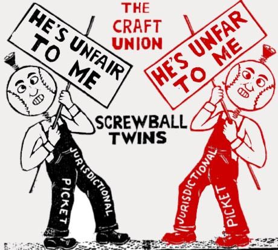

Submitted on Thu, 08/25/2005 - 12:57am
Disclaimer - The following article is reposted here because it is an issue with some relevance to the IWW. The views of the author and the publisher do not necessarily agree with those of the IWW and vice versa.
Original URL: http://www.anarkismo.net/newswire.php?story_id=1186
The future of the USA Labor Movement
by Patrick Star - Northwest Anarchist Federation Friday, Aug 19 2005, 11:30am
north america / mexico / workplace struggles / feature
The proposal for restructuring the American Federation of Labor-Congress of Industrial Organization
 This decline in union membership across the USA is being felt through the decline of the standard of living. Wages have not kept up with the increased cost of living. There is a crisis in the labor movement and workers are going to have to devise strategies that will lay the foundations for the eventual upsurge in organizing at work.
This decline in union membership across the USA is being felt through the decline of the standard of living. Wages have not kept up with the increased cost of living. There is a crisis in the labor movement and workers are going to have to devise strategies that will lay the foundations for the eventual upsurge in organizing at work.
Submitted on Mon, 08/22/2005 - 1:33am
From the Industrial Worker - September 2005. 
The IWW’s Scottish Parliament Job Branch has filed a strong protestagainst the Parliament’s decision to strip the Scottish Socialist Party members’ 14 staff of one month’s wages, noting that the decision – taken by the Labour Party majority – violates the workers’ fundamental labour rights.
The protest was filed jointly with the National Union of Journalists. The IWW and NUJ represent the 14 workers affected.
The issue arises from a decision to strip the SSP delegation of its salaries, facilities and support staff after the four Socialist parliamentarians protested within the chamber against a government ban on protests at the site of the G8 summit in Gleneagles despite parliamentary votes to allow demonstrations. Protests were subsequently allowed.
Neither the unions representing the affected workers nor the SSP, which employes them, were informed of or permitted to attend the meeting of the Scottish Parliament committees where the decision was taken, nor were the IWW or NUJ notified that action against our members was being considered.
Submitted on Fri, 08/19/2005 - 12:47am
 The first line of Starbucks Coffee Company's mission statement says "to provide a great work environment & treat each other with respect & dignity." Recently Starbucks barista Sarah Bender was fired for attempting to improve the work environment that the company claims to already be providing.
The first line of Starbucks Coffee Company's mission statement says "to provide a great work environment & treat each other with respect & dignity." Recently Starbucks barista Sarah Bender was fired for attempting to improve the work environment that the company claims to already be providing.
She was fired for union organizing. And when Sarah Bender, numerous IWW co-workers & supporters picketed the Starbucks at Cooper Union recently, they had to confront numerous hecklers, members of Billionaires for Bush, who could not sip their lattes idly but instead, recognized Starbucks for its outstanding performance in union-busting and its continuing commitment to pay its baristas unlivable wages.
Read More: http://www.starbucksunion.org/node/369
Submitted on Fri, 08/19/2005 - 12:25am
HONOR AIRPORT WORKERS PICKET LINES! DON’T CROSS FOR THE BOSS!
SOLIDARITY WITH AIRCRAFT MECHANICS! NO MORE PATCO DEFEATS!
AN INJURY TO ONE IS AN INJURY TO ALL!
The U.S. labor movement may be facing its most important test since the split in the AFL-CIO in July. Northwest Airlines has declared war on the Aircraft Mechanics and the Flight Attendants unions. The company has openly bragged that they're spending $100 million to hire and train 1,000 scab mechanics. Northwest crafted demands to force a strike: 50% cut in the workforce, 26% cut in pay, cut medical benefits by forcing workers to pay 20% of the premium and freeze the pensions for 15 years. Employers are stonewalling negotiations. The strike deadline is set for Friday August 19.
For workers it’s an easy choice in a struggle between a greedy employer and a labor union. Yet, the leadership of neither wing of the split in the AFL-CIO has stepped forward to offer support for the airline workers. This is a shame! Have they learned nothing from the devastating defeat of the PATCO strike 24 years ago? In 1981, officers of the Professional Air Traffic Controllers' union were hauled off to jail in handcuffs at the urging of President Reagan. Unions at airports crossed the PATCO picket lines. It wasn't their jobs or union, so they thought, that was on the chopping block. The misleadership of the AFL-CIO did nothing to mobilize labor to defend picket lines. Instead they cynically called on the public not to fly. The tragic result: a union in a key transport industry was broken and all workers have suffered from that defeat since. Organized labor is down to a low of 12%. Corporate robber barons and their flunkey judges rip up negotiated pensions with impunity. Nowadays, strikes are seen in baseball, but rarely by workers organizing to defend their interests.
Submitted on Tue, 08/16/2005 - 1:53pm
After three months on Strike it is hugely important any kind of support so please, resend this comunicate asking for solidarity with the AUSSA workers. The following is translated from Spanish by non-native English speakers.
Request for Solidarity
 Information about the AUSSA (Sevilla Municipal Car Crane) conflict and request for national and international solidarity
Information about the AUSSA (Sevilla Municipal Car Crane) conflict and request for national and international solidarity
More than 90 days of indefinite time strike and there is no sign of a solution to the conflict affecting to thirty workers.
All the Municipal Car Crane workers began, on the 16th of May, an indefinite time strike after the sacking of 4 workers and a number of work sanctions to all the workers that had followed a previous strike. The indefinite time strike begun because of these reprisals on the side of the company. The sacked workers have also had a 8 day hunger strike while locked at the Seville cathedral.
The offer of the company is to admit only 2 of the 4 sacked workers but under employment and wage suspension for 11 and 25 days, insisting on the other 2 dismissals. This is totally unacceptable to the workers and the CNT. The strike was convoked basically to demand the readmission for all the sacked workers, without counterweight. Otherwise there is no possible solution.